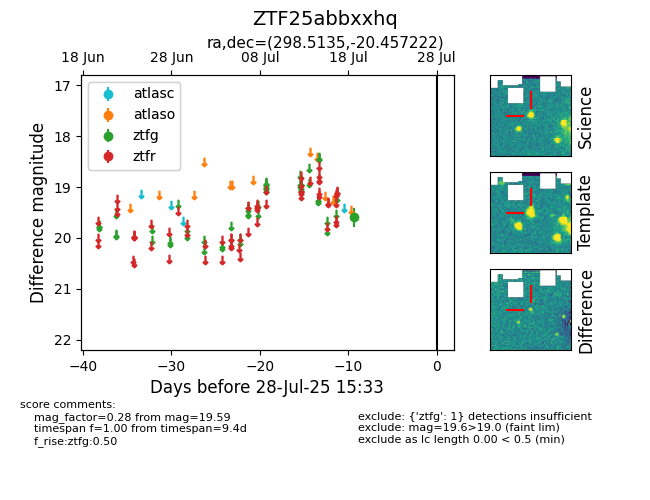

Target ZTF25abbxxhq at 2025-07-28 15:33, see:
FINK: fink-portal.org/ZTF25abbxxhq
Lasair: lasair-ztf.lsst.ac.uk/objects/ZTF25abbxxhq
ALeRCE: alerce.online/object/ZTF25abbxxhq
alt names
ZTF25abbxxhq (ztf,fink)
coordinates:
equatorial (ra, dec) = (298.5135,-20.45722)
galactic (l, b) = (20.6881,-22.60455)
photometry
last ztfg=19.59
1 ztfg detections
